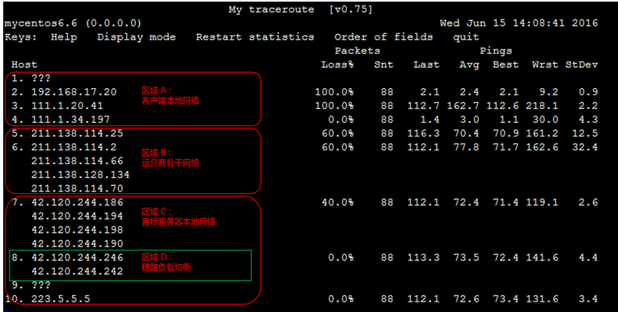

故障-ping 丢包或不通时链路测试说明
当客户端访问目标服务器出现 ping 丢包或 ping 不通时，可以通过 tracert 或 mtr 等工具进行链路测试来判断问题来源。本文先介绍了进行链路测试的相关工具，然后对测试结果分析及测试步骤进行了说明。
链路测试工具介绍
根据操作系统类型的不同，链路测试所使用的工具也有所不同。分别简要介绍如下。
Linux 环境下链路测试工具介绍
traceroute 命令行工具
mtr 命令行工具（建议优先使用）
traceroute 命令行工具
traceroute 是几乎所有 Linux 发行版本预装的网络测试工具，用于跟踪 Internet 协议（IP）数据包传送到目标地址时经过的路径。
traceroute 先发送具有小的最大存活时间值（Max_TTL）的 UDP 探测数据包，然后侦听从网关开始的整个链路上的 ICMP TIME_EXCEEDED 响应。探测从 TTL=1 开始，TTL 值逐步增加，直至接收到ICMP PORT_UNREACHABLE 消息。ICMP PORT_UNREACHABLE 消息用于标识目标主机已经被定位，或命令已经达到允许跟踪的最大 TTL 值。
traceroute 默认发送 UDP 数据包进行链路探测。可以通过 -I 参数来指定发送 ICMP 数据包用于探测。
用法说明：
traceroute [-I] [ -m Max_ttl ] [ -n ] [ -p Port ] [ -q Nqueries ] [ -r ] [ -s SRC_Addr ] [ -t TypeOfService ] [ -f flow ] [ -v ] [ -w WaitTime ] Host [ PacketSize ]
示例输出：
[root\@centos ~]# traceroute -I 223.5.5.5
常见可选参数说明：
-d 使用Socket层级的排错功能。
-f 设置第一个检测数据包的存活数值TTL的大小。
-F 设置不要分段标识。
-g 设置来源路由网关，最多可设置8个。
-i 使用指定的网卡送出数据包。用于主机有多个网卡时。
-I 使用ICMP数据包替代 UDP 数据包进行探测。
-m 设置检测数据包的最大存活数值TTL的大小。
-n 直接使用IP地址而非主机名称（禁用 DNS 反查）。
-p 设置UDP传输协议的通信端口。
-r 忽略普通的Routing Table，直接将数据包送到远端主机上。
-s 设置本地主机送出数据包的IP地址。
-t 设置检测数据包的TOS数值。
-v 详细显示指令的执行过程。
-w 设置等待远端主机回包时间。
-x 开启或关闭数据包的正确性检验。
mtr 命令行工具（建议优先使用）
mtr （My traceroute）也是几乎所有 Linux 发行版本预装的网络测试工具。他把 ping和 traceroute 的功能并入了同一个工具中，所以功能更强大。
mtr 默认发送 ICMP 数据包进行链路探测。可以通过 -u 参数来指定使用 UDP 数据包用于探测。
相对于 traceroute 只会做一次链路跟踪测试，mtr 会对链路上的相关节点做持续探测并给出相应的统计信息。所以，mtr能避免节点波动对测试结果的影响，所以其测试结果更正确，建议优先使用。
用法说明：
mtr [-hvrctglspni46] [-help] [-version] [-report] [-report-cycles=COUNT] [-curses] [-gtk] [-raw] [-split] [-no-dns] [-address interface] [-psize=bytes/-s bytes] [-interval=SECONDS] HOSTNAME [PACKETSIZE]
示例输出：
[root\@centos ~]# mtr 223.5.5.5
Loss% Snt Last Avg Best Wrst StDev
10.59.209.130 0.0% 8 9.0 8.1 1.1 11.8 3.5
10.200.135.213 0.0% 8 0.9 0.8 0.6 0.9 0.0
10.200.135.213 0.0% 8 1.0 0.7 0.6 1.0 0.0
10.196.1.70 85.7% 8 37.9 37.9 37.9 37.9 0.0
139.199.98.197 0.0% 8 44.7 44.6 44.5 44.7 0.0
常见可选参数说明：
-r 或 -report：以报告模式显示输出。
-p 或 -split：将每次追踪的结果分别列出来，而非如 -report统计整个结果。
-s 或 -psize：指定ping数据包的大小。
-n 或 -no-dns：不对IP地址做域名反解析。
-a 或 -address：设置发送数据包的IP地址。用于主机有多个IP时。
-4：只使用 IPv4 协议。
-6：只使用 IPv6 协议。
另外，也可以在 mtr 运行过程中，输入相应字母来快速切换模式，比如：
？或 h：显示帮助菜单。
d：切换显示模式。
n：切换启用或禁用 DNS 域名解析。
u：切换使用 ICMP或 UDP 数据包进行探测。
返回结果说明：
默认配置下，返回结果中各数据列的说明：
第一列（Host）：节点IP地址和域名。如前面所示，按n键可以切换显示。
第二列（Loss%）：节点丢包率。
第三列（Snt）：每秒发送数据包数。默认值是10，可以通过参数 -c 指定。
第四列（Last）：最近一次的探测延迟值。
第五、六、七列（Avg、Best、Wrst）：分别是探测延迟的平均值、最小值和最大值。
第八列（StDev）：标准偏差。越大说明相应节点越不稳定。
Windows 环境下链路测试工具介绍
TRACERT 命令行工具
WinMTR 工具（建议优先使用）
TRACERT 命令行工具
TRACERT (Trace Route) 是 Windows 自带的网络诊断命令行实用程序，用于跟踪 Internet 协议 (IP) 数据包传送到目标地址时经过的路径。
TRACERT 通过向目标地址发送 ICMP 数据包来确定到目标地址的路由。在这些数据包中，TRACERT 使用了不同的 IP“生存期”(TTL) 值。由于要求沿途的路由器在转发数据包前至少必须将 TTL 减少 1，因此 TTL 实际上相当于一个跃点计数器 (hop counter)。当某个数据包的 TTL 达到零 (0) 时，相应节点就会向源计算机发送一个 ICMP“超时”的消息。
TRACERT 第一次发送 TTL 为 1 的数据包，并在每次后续传输时将 TTL 增加 1，直到目标地址响应或达到 TTL 的最大值。中间路由器发送回来的 ICMP“超时”消息中包含了相应节点的信息。
用法说明：
试用
tracert [-d] [-h maximum_hops] [-j host-list] [-w timeout] [-R] [-S srcaddr] [-4] [-6] target_name
示例输出：
试用
C:\> tracert -d 223.5.5.5通过最多 30 个跃点跟踪到 223.5.5.5 的路由 1 请求超时。 2 9 ms 3 ms 12 ms 192.168.17.20 3 4 ms 9 ms 2 ms 111.1.20.41 4 9 ms 2 ms 1 ms 111.1.34.197 5 11 ms 211.140.0.57 6 3 ms 2 ms 2 ms 211.138.114.62 7 2 ms 2 ms 1 ms 42.120.244.190 8 32 ms 4 ms 3 ms 42.120.244.238 9 请求超时。 10 3 ms 2 ms 2 ms 223.5.5.5跟踪完成。
常见可选参数说明：
-d：指定不将地址解析为主机名（禁用 DNS 反解）。
-h：maximum_hops，指定搜索目标地址时的最大跃点数。
-j： host-list，指定沿主机列表的松散源路由。
-w：timeout，由每个回复的 timeout 指定的等待毫秒数。
-R：跟踪往返行程路径(仅适用于 IPv6)。
-S：srcaddr，要使用的源地址(仅适用于 IPv6)。
-4：强制使用 IPv4。
-6：强制使用 IPv6。
target_host：目标主机域名或 IP 地址。
WinMTR 工具（建议优先使用）
WinMTR 是 mtr 工具在 Windows 环境下的图形化实现，但进行了功能简化，只支持 mtr部分参数的调整设置。WinMTR 默认发送ICMP 数据包进行探测，无法切换。
WinMTR 可以从其官方网站下载获取。
和 mtr 一样，相比 tracert，WinMTR 能避免节点波动对测试结果的影响，所以测试结果更正确。所以，在 WinMTR 可用的情况下，建议优先使用 WinMTR 进行链路测试。
用法说明：
WinMTR 无需安装，直接解压运行即可。操作方法非常简单，说明如下：
如下图所示，运行程序后，在 Host 字段输入目标服务器域名或 IP（注意前面不要包含空格）。
点击 Start 开始测试（开始测试后，相应按钮变成了 Stop）。
运行一段时间后，点击 Stop 停止测试。
其它选项说明：
Copy Text to clipboard：将测试结果以文本格式复制到粘贴板。
Copy HTML to clipboard：将测试结果以 HTML 格式复制到粘贴板。
Export TEXT：将测试结果以文本格式导出到指定文件。
Export HTML：将测试结果以 HTML 格式导出到指定文件。
Options：可选参数，包括：
Interval（sec）：每次探测的间隔（过期）时间。默认为 1 秒。
Ping size(bytes)： ping 探测所使用的数据包大小，默认为 64 字节。、
Max hosts in LRU list： LRU 列表支持的最大主机数，默认值为 128。
Resolve names：通过反查 IP 以域名显示相关节点。
返回结果说明：
默认配置下，返回结果中各数据列的说明：
第一列（Hostname）：节点 IP 或域名。
第二列（Nr）：节点编号。
第三列（Loss%）：节点丢包率。
第四列（Sent）：已发送的数据包数量。
第五列（Recv）：已成功接收的数据包数量。
第六、七、八、九列（Best 、Avg、Worst、Last）：分别是到相应节点延迟的最小值、平均值、最大值和最后一次值。
第八列（StDev）：标准偏差。越大说明相应节点越不稳定。
链路测试结果分析简要说明
由于 mtr（WinMTR）有更高的准确性。本文以其测试结果为例，对链路测试结果的分析进行简要说明。
后续说明，以如下链路测试结果示例图为基础进行阐述：

对链路测试结果进行分析时，需要关注如下要点：
网络区域
链路负载均衡
结合Avg（平均值）和 StDev（标准偏差）综合判断
Loss%（丢包率）的判断
关于延迟
网络区域
正常情况下，从客户端到目标服务器的整个链路，会显著的包含如下区域：
客户端本地网络（本地局域网和本地网络提供商网络）：如前文链路测试结果示例图中的区域 A。如果该区域出现异常，如果是客户端本地网络相关节点出现异常，则需要对本地网络进行相应排查分析。否则，如果是本地网络提供商网络相关节点出现异常，则需要向当地运营商反馈问题。
运营商骨干网络：如前文链路测试结果示例图中的区域 B。如果该区域出现异常，可以根据异常节点 IP 查询归属运营商，然后直接或通过阿里云售后技术支持，向相应运营商反馈问题。
目标服务器本地网络（目标主机归属网络提供商网络）: 如前文链路测试结果示例图中的区域 C。如果该区域出现异常，则需要向目标主机归属网络提供商反馈问题。
链路负载均衡
如前文链路测试结果示例图中的区域 D 所示。如果中间链路某些部分启用了链路负载均衡，则 mtr 只会对首尾节点进行编号和探测统计。中间节点只会显示相应的 IP 或域名信息。
结合Avg（平均值）和 StDev（标准偏差）综合判断
由于链路抖动或其它因素的影响，节点的 Best 和 Worst 值可能相差很大。而 Avg（平均值） 统计了自链路测试以来所有探测的平均值，所以能更好的反应出相应节点的网络质量。
而 StDev（标准偏差值）越高，则说明数据包在相应节点的延时值越不相同（越离散）。所以，标准偏差值可用于协助判断 Avg 是否真实反应了相应节点的网络质量。例如，如果标准偏差很大，说明数据包的延迟是不确定的。可能某些数据包延迟很小（例如：25ms），而另一些延迟却很大（例如：350ms），但最终得到的平均延迟反而可能是正常的。所以，此时 Avg 并不能很好的反应出实际的网络质量情况。
综上，建议的分析标准是：
如果 StDev 很高，则同步观察相应节点的 Best 和 Wrst，来判断相应节点是否存在异常。
如果 StDev 不高，则通过 Avg来判断相应节点是否存在异常。
注：上述 StDev “高”或者“不高”，并没有具体的时间范围标准。而需要根据同一节点其它列的延迟值大小来进行相对评估。比如，如果 Avg 为 30ms，那么，当 StDev 为 25ms，则认为是很高的偏差。而如果 Avg 为 325ms，则同样的 StDev（25ms），反而认为是不高的偏差。
Loss%（丢包率）的判断
任一节点的 Loss%（丢包率）如果不为零，则说明这一跳网络可能存在问题。导致相应节点丢包的原因通常有两种：
运营商基于安全或性能需求，人为限制了节点的 ICMP 发送速率，导致丢包。
节点确实存在异常，导致丢包。
可以结合异常节点及其后续节点的丢包情况，来判定丢包原因：
如果随后节点均没有丢包，则通常说明异常节点丢包是由于运营商策略限制所致。可以忽略相关丢包。如前文链路测试结果示例图中的第 2 跳所示。
如果随后节点也出现丢包，则通常说明异常节点确实存在网络异常，导致丢包。如前文链路测试结果示例图中的第 5 跳所示。
另外，需要说明的是，前述两种情况可能同时发生。即相应节点既存在策略限速，又存在网络异常。对于这种情况，如果异常节点及其后续节点连续出现丢包，而且各节点的丢包率不同，则通常以最后几跳的丢包率为准。如前文链路测试结果示例图所示，在第 5、6、7跳均出现了丢包。所以，最终丢包情况，以第 7 跳的 40% 作为参考。
关于延迟
延迟跳变
如果在某一跳之后延迟明显陡增，则通常判断该节点存在网络异常。如前文链路测试结果示例图所示，从第 5 跳之后的后续节点延迟明显陡增，则推断是第 5 跳节点出现了网络异常。
不过，高延迟并不一定完全意味着相应节点存在异常。如前文链路测试结果示例图所示，第 5 跳之后，虽然后续节点延迟明显陡增，但测试数据最终仍然正常到达了目的主机。所以，延迟大也有可能是在数据回包链路中引发的。所以，最好结合反向链路测试一并分析。
ICMP 限速导致延迟增加
ICMP 策略限速也可能会导致相应节点的延迟陡增，但后续节点通常会恢复正常。如前文链路测试结果示例图所示，第 3 跳有 100% 的丢包率，同时延迟也明显陡增。但随后节点的延迟马上恢复了正常。所以判断该节点的延迟陡增及丢包是由于策略限速所致。
常见链路异常场景和测试报告
常见的链路异常场景及测试报告实例如下所示：
目标主机网络配置不当
ICMP 限速
环路
链路中断
目标主机网络配置不当
示例数据：
t\@mycentos6 ~]# mtr -no-dns www.google.comMy traceroute [v0.75]mycentos6.6 (0.0.0.0) Wed Jun 15 19:06:29 2016Keys: Help Display mode Restart statistics Order of fields quit Packets Pings Host Loss% Snt Last Avg Best Wrst StDev 1. ??? 2. ??? 3. 111.1.20.41 0.0% 10 521.3 90.1 2.7 521.3 211.3 4. 111.1.34.209 0.0% 10 2.9 4.7 1.6 10.6 3.9 5. 211.138.126.29 80.0% 10 3.0 3.0 3.0 3.0 0.0 6. 221.183.14.85 0.0% 10 1.7 7.2 1.6 34.9 13.6 7. 221.183.10.5 0.0% 10 5.2 5.2 5.1 5.2 0.0 221.183.11.5 8. 221.183.23.26 0.0% 10 5.3 5.2 5.1 5.3 0.1 9. 173.194.200.105 100.0% 10 0.0 0.0 0.0 0.0 0.0
在该示例中，数据包在目标地址出现了 100% 的丢包。乍一看是数据包没有到达，其实很有可能是目标服务器相关安全策略（比如防火墙、iptables 等）禁用了 ICMP 所致，导致目的主机无法发送任何应答。
所以，该场景需要排查目标服务器的安全策略配置。
ICMP 限速
示例数据：
[root\@mycentos6 ~]# mtr -no-dns www.google.comMy traceroute [v0.75]mycentos6.6 (0.0.0.0) Wed Jun 15 19:06:29 2016Keys: Help Display mode Restart statistics Order of fields quit Packets Pings Host Loss% Snt Last Avg Best Wrst StDev1. 63.247.74.43 0.0% 10 0.3 0.6 0.3 1.2 0.32. 63.247.64.157 0.0% 10 0.4 1.0 0.4 6.1 1.83. 209.51.130.213 0.0% 10 0.8 2.7 0.8 19.0 5.74. aix.pr1.atl.google.com 0.0% 10 6.7 6.8 6.7 6.9 0.15. 72.14.233.56 60.0% 10 27.2 25.3 23.1 26.4 2.96. 209.85.254.247 0.0% 10 39.1 39.4 39.1 39.7 0.27. 64.233.174.46 0.0% 10 39.6 40.4 39.4 46.9 2.38. gw-in-f147.1e100.net 0.0% 10 39.6 40.5 39.5 46.7 2.2
在该示例中，在第 5 跳出现了明显的丢包，但后续节点均未见异常。所以推断是该节点 ICMP 限速所致。
该场景对最终客户端到目标服务器的数据传输不会有影响，所以，分析的时候可以忽略。
环路
示例数据：
[root\@mycentos6 ~]# mtr -no-dns www.google.comMy traceroute [v0.75]mycentos6.6 (0.0.0.0) Wed Jun 15 19:06:29 2016Keys: Help Display mode Restart statistics Order of fields quit Packets Pings Host Loss% Snt Last Avg Best Wrst StDev1. 63.247.74.43 0.0% 10 0.3 0.6 0.3 1.2 0.32. 63.247.64.157 0.0% 10 0.4 1.0 0.4 6.1 1.83. 209.51.130.213 0.0% 10 0.8 2.7 0.8 19.0 5.74. aix.pr1.atl.google.com 0.0% 10 6.7 6.8 6.7 6.9 0.15. 72.14.233.56 0.0% 10 0.0 0.0 0.0 0.0 0.06. 72.14.233.57 0.0% 10 0.0 0.0 0.0 0.0 0.07. 72.14.233.56 0.0% 10 0.0 0.0 0.0 0.0 0.08. 72.14.233.57 0.0% 10 0.0 0.0 0.0 0.0 0.09 ??? 0.0% 10 0.0 0.0 0.0 0.0 0.0
在该示例中，数据包在第 5 跳之后出现了循环跳转，导致最终无法到达目标服务器。这通常是由于运营商相关节点路由配置异常所致。
所以，该场景需要联系相应节点归属运营商处理。
链路中断
示例数据：
t\@mycentos6 ~]# mtr -no-dns www.google.comMy traceroute [v0.75]mycentos6.6 (0.0.0.0) Wed Jun 15 19:06:29 2016Keys: Help Display mode Restart statistics Order of fields quit Packets Pings Host Loss% Snt Last Avg Best Wrst StDev1. 63.247.74.43 0.0% 10 0.3 0.6 0.3 1.2 0.32. 63.247.64.157 0.0% 10 0.4 1.0 0.4 6.1 1.83. 209.51.130.213 0.0% 10 0.8 2.7 0.8 19.0 5.74. aix.pr1.atl.google.com 0.0% 10 6.7 6.8 6.7 6.9 0.15. ??? 0.0% 10 0.0 0.0 0.0 0.0 0.06. ??? 0.0% 10 0.0 0.0 0.0 0.0 0.07. ??? 0.0% 10 0.0 0.0 0.0 0.0 0.08. ??? 0.0% 10 0.0 0.0 0.0 0.0 0.09 ??? 0.0% 10 0.0 0.0 0.0 0.0 0.0
在该示例中，数据包在第 4 跳之后就无法收到任何反馈。这通常是由于相应节点中断所致。建议结合反向链路测试做进一步确认。
该场景需要联系相应节点归属运营商处理。
链路测试步骤
通常情况下，链路测试流程如下链路测试流程图所示：
相关步骤详细说明如下：
获取本地网络对应公网 IP
正向链路测试（ping 和 mtr）
反向链路测试（ping 和 mtr）
测试结果分析
获取本地网络对应公网 IP
在客户端本地网络访问 ip.taobao.com 等网站，如下图，获取本地网络对应的公网 IP。
正向链路测试（ping 和 mtr）
从客户端向目标服务器做 ping 和 mtr 链路测试：
从客户端向目标服务器域名或 IP 做持续的 ping 测试（建议至少 ping 100 个数据包），记录测试结果。
根据客户端操作系统环境的不同，使用 WinMTR 或 mtr，设置测试目的地址为目标服务器域名或IP，然后进行链路测试，记录测试结果。
反向链路测试（ping 和 mtr）
进入目标服务器系统内部，做反向 ping 和 mtr 链路测试
从目标服务器向前述步骤 1 获取的客户端 IP做持续的 ping 测试（建议至少 ping 100 个数据包），记录测试结果。
根据目标服务器操作系统环境的不同，使用 WinMTR 或 mtr，设置测试目的地址为前述步骤 1 获取的客户端 IP，然后进行链路测试，记录测试结果。
测试结果分析
参阅前述说明，对测试结果进行分析。确认异常节点后，访问 ip.taobao.com 等网站查询、获取相应节点归属运营商及网络。
如果是客户端本地网络相关节点出现异常，则需要对本地网络进行相应排查分析。如果是运营商相关节点出现异常，则需要直接或联系阿里云售后技术支持向相应运营商反馈问题。